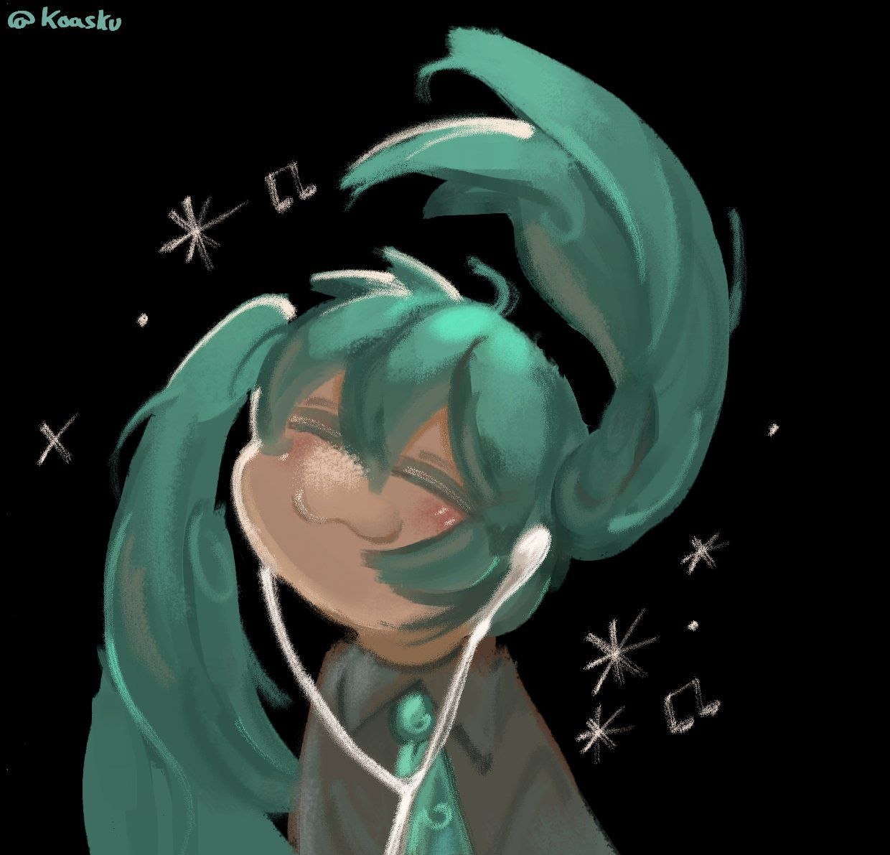

About Hatsune Miku
Hatsune Miku is a virtual pop star and one of the most famous characters from Vocaloid software.
She is a digital avatar whose voice is created from samples of a real voice actress.
Fans all over the world create songs, art and videos with her.
